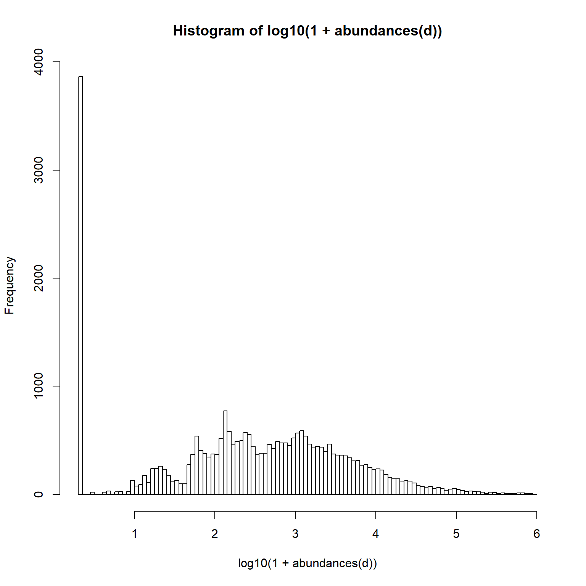
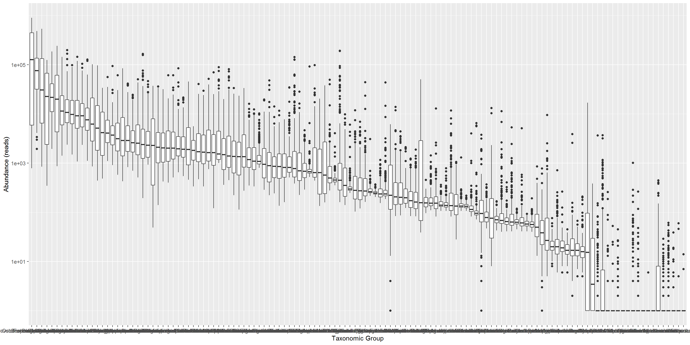
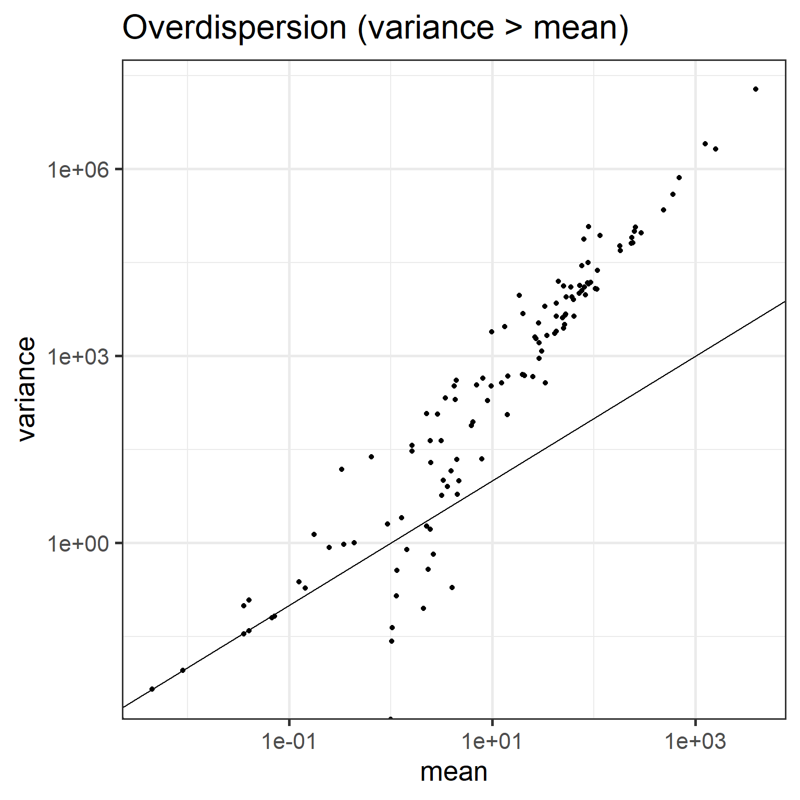
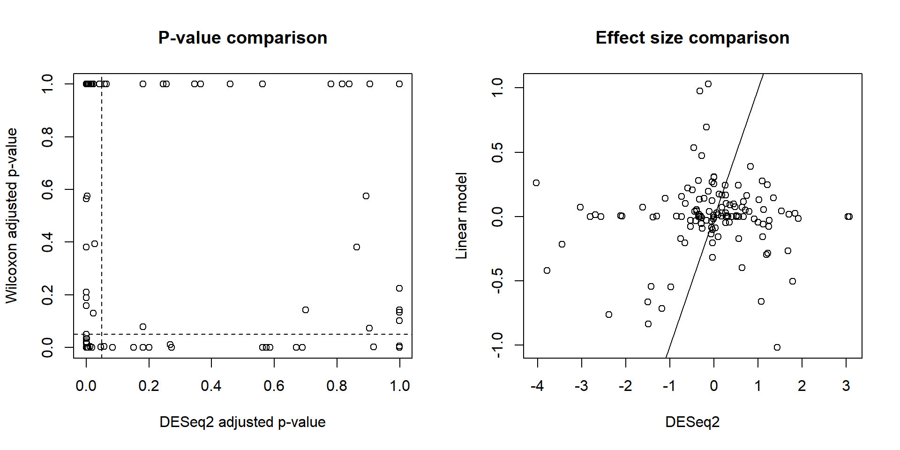

10 Advanced models for differential abundance
GLMs are the basis for advanced testing of differential abundance in sequencing data. This is necessary, as the sequencing data sets deviate from symmetric, continuous, Gaussian assumptions in many ways.
10.1 Particular properties of taxonomic profiling data
10.1.1 Discrete count data
Sequencing data consists of discrete counts:
print(abundances(d)[1:5,1:3])## Sample-1 Sample-2 Sample-3
## Actinomycetaceae 11 67 21
## Aerococcus 1 1 1
## Aeromonas 1 1 1
## Akkermansia 1167 6127 4235
## Alcaligenes faecalis et rel. 90 126 18810.1.2 Sparsity
The data is sparse:
hist(log10(1 + abundances(d)), 100)
10.1.3 Rarity
Long tails of rare taxa:
library(reshape2)
medians <- apply(abundances(d),1,median)/1e3
A <- melt(abundances(d))
A$Var1 <- factor(A$Var1, levels = rev(names(sort(medians))))
p <- ggplot(A, aes(x = Var1, y = value)) +
geom_boxplot() +
labs(y = "Abundance (reads)", x = "Taxonomic Group") +
scale_y_log10()
print(p)
10.1.4 Overdispersion
Variance exceeds the mean:
means <- apply(abundances(d),1,mean)
variances <- apply(abundances(d),1,var)
# Calculate mean and variance over samples for each taxon
library(reshape2)
library(dplyr)
df <- melt(abundances(d))
names(df) <- c("Taxon", "Sample", "Reads")
df <- df %>% group_by(Taxon) %>%
summarise(mean = mean(Reads),
variance = var(Reads))
# Illustrate overdispersion
library(scales)
p <- ggplot(df, aes(x = mean, y = variance)) +
geom_point() +
geom_abline(aes(intercept = 0, slope = 1)) +
scale_x_log10(labels = scales::scientific) +
scale_y_log10(labels = scales::scientific) +
labs(title = "Overdispersion (variance > mean)")
print(p)
10.2 Generalized linear models: a brief overview
Let us briefly discuss the ideas underlying generalized linear models.
The Generalized linear model (GLM) allows a richer family of probability distributions to describe the data. Intuitively speaking, GLMs allow the modeling of nonlinear, nonsymmetric, and nongaussian associations. GLMs consist of three elements:
A probability distribution for the data (from exponential family)
A linear predictor targeting the mean, or expectation: \(Xb\)
A link function g such that \(E(Y) = \mu = g^{-1}(Xb)\).
Let us fit Poisson with (natural) log-link just to demonstrate how generalized linear models could be fitted in R. We fit the abundance (read counts) assuming that the data is Poisson distributed, and the logarithm of its mean, or expectation, is obtained with a linear model. For further examples in R, you can also check the statmethods website.
# Load again the example data
d <- dietswap
df <- data.frame(Abundance = abundances(d)[taxa,],
Group = meta(d)$nationality)
res <- glm(Abundance ~ 1, data = df, family = "poisson")Investigate the model output:
knitr::kable(summary(res)$coefficients, digits = 5)| Estimate | Std. Error | z value | Pr(>|z|) | |
|---|---|---|---|---|
| (Intercept) | 5.02355 | 0.00544 | 922.6545 | 0 |
Note the link between mean and estimated coefficient (\(\mu = e^{Xb}\)):
mean(df$Abundance)## [1] 151.9505exp(coef(res))## (Intercept)
## 151.950510.3 DESeq2: differential abundance testing for sequencing data
10.3.1 Fitting DESeq2
[DESeq2 analysis]((https://genomebiology.biomedcentral.com/articles/10.1186/s13059-014-0550-8) accommodates those particular assumptions about sequencing data.
# Start by converting phyloseq object to deseq2 format
library(DESeq2)
d <- dietswap # Phyloseq data
ds2 <- phyloseq_to_deseq2(d, ~ group + nationality)
# Run DESeq2 analysis (all taxa at once!)
dds <- DESeq(ds2)
# Investigate results
deseq.results <- as.data.frame(results(dds))
deseq.results$taxon <- rownames(results(dds))
# Sort (arrange) by pvalue and effect size
library(knitr)
deseq.results <- deseq.results %>%
arrange(pvalue, log2FoldChange)
# Print the result table
# Let us only show significant hits
knitr::kable(deseq.results %>%
filter(pvalue < 0.05 & log2FoldChange > 1.5),
digits = 5)| baseMean | log2FoldChange | lfcSE | stat | pvalue | padj | taxon |
|---|---|---|---|---|---|---|
| 1870.08336 | 1.89495 | 0.12667 | 14.95965 | 0 | 0 | Clostridium difficile et rel. |
| 1015.44245 | 2.12453 | 0.18359 | 11.57241 | 0 | 0 | Klebisiella pneumoniae et rel. |
| 3335.72902 | 3.02549 | 0.28380 | 10.66044 | 0 | 0 | Mitsuokella multiacida et rel. |
| 1519.25023 | 1.60976 | 0.18026 | 8.93027 | 0 | 0 | Enterobacter aerogenes et rel. |
| 2848.86627 | 1.77112 | 0.22906 | 7.73226 | 0 | 0 | Megasphaera elsdenii et rel. |
| 321.24275 | 2.86529 | 0.37602 | 7.61997 | 0 | 0 | Serratia |
| 19.97851 | 2.24305 | 0.31335 | 7.15820 | 0 | 0 | Aquabacterium |
| 173.00079 | 1.80120 | 0.26252 | 6.86114 | 0 | 0 | Haemophilus |
10.3.2 Comparison between DESeq2 and standard models
For comparison purposes, assess significances and effect sizes based on Wilcoxon test.
test.taxa <- taxa(d)
pvalue.wilcoxon <- c()
foldchange <- c()
for (taxa in test.taxa) {
# Create a new data frame for each taxonomic group
df <- data.frame(Abundance = abundances(d)[taxa,],
Log10_Abundance = log10(1 + abundances(d)[taxa,]),
Group = meta(d)$nationality)
# Calculate pvalue and effect size (difference beween log means)
pvalue.wilcoxon[[taxa]] <- wilcox.test(Abundance ~ Group, data = df)$p.value
foldchange[[taxa]] <- coef(lm(Log10_Abundance ~ Group, data = df))[[2]]
}
# Correct p-values for multiple testing
pvalue.wilcoxon.adjusted <- p.adjust(pvalue.wilcoxon)par(mfrow = c(1,2))
plot(deseq.results$padj, pvalue.wilcoxon.adjusted,
xlab = "DESeq2 adjusted p-value",
ylab = "Wilcoxon adjusted p-value",
main = "P-value comparison")
abline(v = 0.05, h = 0.05, lty = 2)
plot(deseq.results$log2FoldChange, foldchange,
xlab = "DESeq2",
ylab = "Linear model",
main = "Effect size comparison")
abline(0,1)
For systematic comparisons between various methods for differential abundance testing, see this paper.